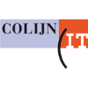
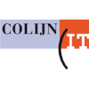

HBO-ICT Job & Student Event
Het HBO-ICT Job & Student Event in Rotterdam vond dit jaar plaats op 5 oktober. Wij als eerstejaarsstudenten zijn er naartoe gegaan om een eerste indruk te krijgen over de verschillende soorten bedrijven waar wij later bij zouden kunnen werken. Deze eerste indruk was voor mij eerlijk gezegd een beetje overweldigend. Mijn kennis over de ICT-sector is nog té beperkt om al gericht vragen te kunnen stellen aan deze bedrijven. Dat is me dan ook niet goed gelukt. Wat wél meteen duidelijk was, was dat de ICT-er tegenwoordig in praktisch elk soort bedrijf nodig is. Ik zal hier een aantal soorten bedrijven benoemen en welke functies ik daarbij verwacht.
Eén van de meest opvallende organisaties die er stonden, waren de overheidsinstellingen. Het Ministerie van Defensie noemt zichzelf een 'mini-maatschappij', omdat je er vrijwel elk vakgebied terugvindt. ICT dus ook. Veiligheid is duidelijk een belangrijk aspect voor Defensie, dus hebben functies als eerste ontwerper IT-Security er een hoge prioriteit. Deze functie is zeer complex en vraagt om veel ervaring en kennis. Onder andere kennis van TOGAF (The Open Group Architecture Framework) wordt genoemd, een methode voor het ontwikkelen en beheren van enterprisearchitectuur.
De Sligro was ook te vinden op het event, wat weer onder de commerciële sector valt. Wat onder andere belangrijk is voor hun, is dat ze een goed ERP system hebben. ERP is een software, waarmee alle processen binnen een bedrijf centraal en overzichtelijk beheerd kunnen worden. Deze software kan heel goed geleverd worden door een extern bedrijf. Dat extern bedrijf heeft veel verschillende ict-funcites, waaronder Technisch Support Medewerker. Deze biedt ondersteuning, in dit geval bijvoorbeeld aan Sligro, met allerlei problemen die ze mogelijk ondervinden met dit ERP system.
Ook de dienstverlening was vertegenwoordigd op het event. Onder andere ProRail was er te vinden, die verantwoordelijk is voor het spoorwegnetwerk van Nederland. Werkzaam bij ProRail zijn onder andere Netwerk Engineers. De Netwerk Engineers zorgen voor het beschikbaar houden van alle ICT diensten die nodig zijn om de treinen in Nederland te laten rijden. Wat ik hieruit opmaak is dat de ICT-sector steeds meer als het hart van een bedrijf gezien kan worden. Als er bijvoorbeeld bij ProRail iets misgaat in de ICT, kan mogelijk het hele treinverkeer stil komen te liggen.
De financiële sector is steeds meer en meer digitaal geworden. Internetbankieren via de app en contactloos betalen zijn de standaard geworden in Nederland. Ook hier is het dus van groot belang dat dit allemaal goed verloopt. En ook hier zijn de ICT-ers er weer verantwoordelijk voor. Wat ik van de financiële sector zag op het event was onder andere de Rabobank. En wat banken zoals de Rabobank onder andere zoeken zijn Crypto Engineers. Deze zijn er verantwoordelijk voor dat online transacties veilig zijn door middel van cryptotechnologie. Hiervoor moet je ook kennis hebben van bepaalde hardware genaamd Hardware Security Modules (HSM). Deze zijn speciaal gemaakt om belangrijke data goed te beveiligen.
Ook de wetenschappelijke sector zou vandaag de dag geen voortgang meer kunnen boeken zonder de juiste software. Mijn zus is op de HZ afgestudeerd in Aquatische Ecotechnologie, en was zeer enthousiast over wetenschappelijk bedrijf genaamd Deltares. Deltares is een onafhankelijk instituut voor toegepast onderzoek op het gebied van water en ondergrond. Eén van de softwares die ze gebruiken is SOBEK. SOBEK is een modelsoftware waarmee je onder andere voorspellingen kan maken over overstromingen. Hier heb je Software Engineers voor nodig. Ik kan me voorstellen dat wanneer je met zulke gespecialiseerde software werkt, het in je voordeel werkt als je ook kennis hebt in het gebied van watermanagement. Maar dit zal echt niet altijd nodig zijn. De Software Engineers van Deltares werken met ontwikkeltechnieken als Agile, en met veel verschillende programmeertalen (C#, Fortran, Java, Python, C++).
Dat laatste, werken met allerlei programmeertalen, lijkt de standaard geworden in de ICT. Je hebt er eigenlijk niks aan als je je specialiseert in één bepaalde programmeertaal. Dit wordt in onze opleiding ook bevestigd, waar we leren omgaan met verschillende talen door in elke cursus weer een andere taal te gebruiken.
Dan heb je ook nog verschillende culturen binnen bedrijven. Er kan een duidelijke hiërarchie bestaan en een strict beleid, of deze kunnen wat losser zijn. Je kan vaste werktijden hebben, en je werk dan ook kunnen loslaten als je naar huis gaat, of je kan flexibele werktijden hebben en misschien ook thuis nog klaar kunnen staan om je in te zetten voor je werk. Er kan ook sprake zijn van een dresscode, of misschien juist helemaal niet. Sommige bedrijven zetten zich in voor een betere sfeer in binnen het bedrijf door bijvoorbeeld uitjes te organiseren, terwijl het bij andere bedrijven duidelijk is dat het puur zakelijk moet blijven.
Ik denk dat de cultuur binnen een bedrijf uiteindelijk een belangrijke factor zal zijn voor het bepalen waar je uiteindelijk wilt gaan werken. Als eerste maak je natuurlijk een keuze in de sector van ICT die het beste bij je pas, maar als je die keuze hebt gemaakt, zal je nog steeds op veel plaatsten terecht kunnen. De cultuur kan dan de beslissende factor zijn om een keuze te maken tussen deze bedrijven.

 
